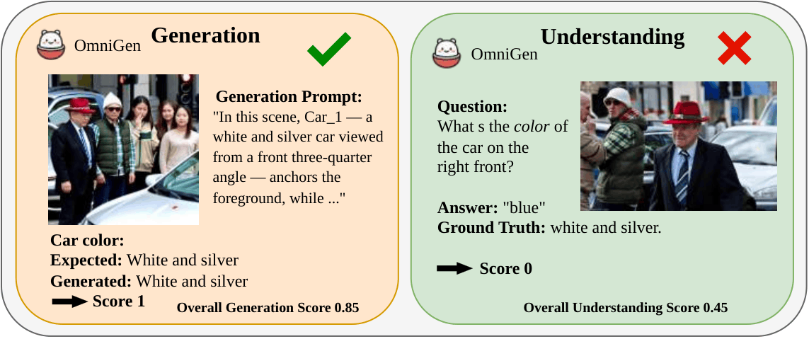
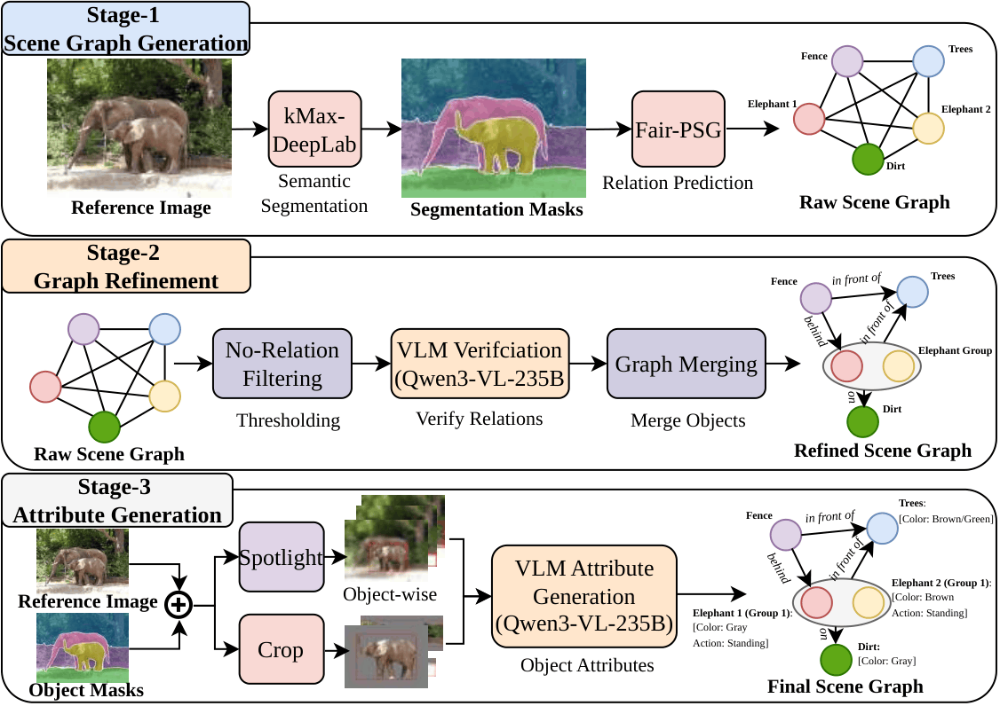
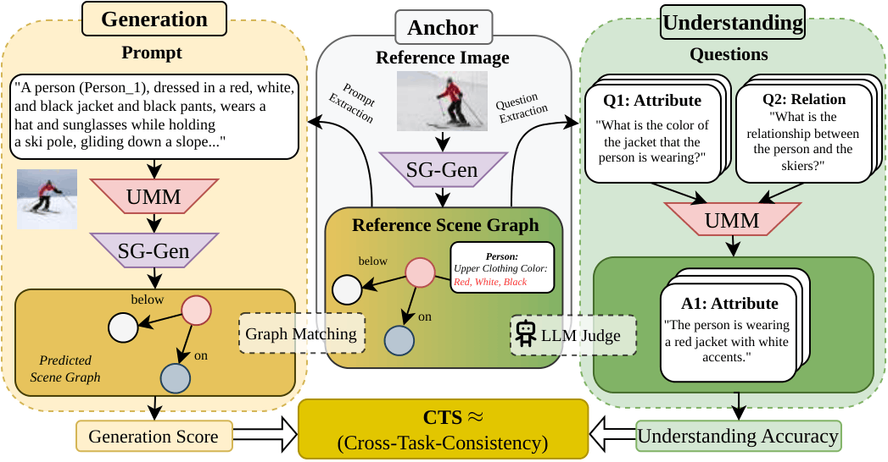

XTC-Bench
Beyond Accuracy:Benchmarking Cross-Task Consistency in Unified Multimodal Models
Introduction
Unified Multimodal Models (uMMs) aim to support both visual understanding and visual generation within a shared representation. However, most existing evaluation protocols assess these two capabilities independently and do not provide fine-grained bi-directional evaluation.
We introduce XTC-Bench, a scene-graph-grounded evaluation framework that measures cross-task visual semantic consistency. By deriving both generation prompts and understanding queries from a structured scene graph, our framework enables fact-level alignment analysis across objects, attributes, and relations.


Motivation: UMMs can generate fine-grained attribute details while failing to recognize them (top); conversely, they can understand relational viewpoints yet fail to render them accurately (bottom).
Data Construction Pipeline

Scene-graph extraction pipeline, producing the final reference scene graph used for evaluation.
Key Steps:
- Scene Graph Generation: Using a two-stage pipeline for object detection and segmentation
- Relation Refinement: Filtering and merging relations with VLM verification
- Attribute Generation: Dual-view approach (Semantic Spotlight + Detail Crop) for fine-grained attributes
- Prompt Generation: Two-stage LLM refinement for natural language generation
- VQA Generation: Fact-aligned question-answer pairs for objects, attributes, and relations
Evaluation Framework

Overview of our evaluation framework. Cross-Task Consistency is evaluated by aggregating Understanding and Generation performance anchored on the same scene.
Evaluation Metrics:
- Generation Score (G): Measures quality of generated images via LLM-as-judge protocol
- Understanding Score (U): Evaluates VQA performance on scene-graph-derived questions
- Continuous Cross-Task Agreement (CCTA): Quantifies semantic agreement between generation and understanding
- Accuracy-Weighted CCTA (AW-CCTA): Penalizes consistent hallucination by weighting with joint accuracy
Dataset Statistics
| Dataset | Total Images | Total Facts | Avg. Obj/Img | Avg. Rel/Img | Avg. Attr/Img | % Obj. Retr. | % Attr. Query | % Rel. Query |
|---|---|---|---|---|---|---|---|---|
| COCO | 1,000 | 16,618 | 10.48 | 16.84 | 8.03 | 15.9% | 39.5% | 44.6% |
| Visual Genome | 1,000 | 14,912 | 8.22 | 11.70 | 6.76 | 16.1% | 39.3% | 44.6% |
| Total | 2,000 | 31,530 | ||||||
Benchmark Results
Generation Performance
| Model | Overall Gen. | Matched Nodes | Attr. | Rel. | Matched Attr. | Matched Rel. |
|---|---|---|---|---|---|---|
| GPT-5 / GPT-Image-1.5 | 0.804 | 89.0% | 0.850 | 0.757 | 0.889 | 0.917 |
| Gemini-2.5 Flash | 0.795 | 87.6% | 0.842 | 0.749 | 0.888 | 0.906 |
| BLIP3-o-8B | 0.545 | 67.9% | 0.591 | 0.502 | 0.716 | 0.896 |
| Tar-7B | 0.518 | 62.5% | 0.564 | 0.479 | 0.743 | 0.902 |
| Janus-Pro-7B | 0.499 | 62.2% | 0.557 | 0.455 | 0.799 | 0.908 |
| OmniGen-2 | 0.499 | 80.1% | 0.593 | 0.411 | 0.867 | 0.909 |
| Show-o | 0.060 | 14.3% | 0.083 | 0.041 | 0.703 | 0.893 |
| Show-o-2-7B | 0.465 | 62.3% | 0.534 | 0.411 | 0.829 | 0.848 |
| BAGEL-7B | 0.725 | 79.3% | 0.782 | 0.670 | 0.855 | 0.912 |
| MMaDA-8B | 0.265 | 39.1% | 0.347 | 0.201 | 0.713 | 0.871 |
Understanding Performance
| Model | Overall Und. | Obj. Retr. | Attr. Query | Rel. Query | Matched Attr. | Matched Rel. |
|---|---|---|---|---|---|---|
| GPT-5 / GPT-Image-1.5 | 0.684 | 0.718 | 0.700 | 0.658 | 0.702 | 0.662 |
| Gemini-2.5 Flash | 0.740 | 0.686 | 0.708 | 0.789 | 0.710 | 0.793 |
| BLIP3-o-8B | 0.692 | 0.679 | 0.677 | 0.709 | 0.688 | 0.740 |
| Tar-7B | 0.580 | 0.557 | 0.591 | 0.580 | 0.612 | 0.615 |
| Janus-Pro-7B | 0.681 | 0.616 | 0.665 | 0.719 | 0.682 | 0.745 |
| OmniGen-2 | 0.659 | 0.672 | 0.666 | 0.649 | 0.688 | 0.695 |
| Show-o | 0.503 | 0.415 | 0.579 | 0.467 | 0.632 | 0.582 |
| Show-o-2-7B | 0.605 | 0.583 | 0.664 | 0.560 | 0.677 | 0.589 |
| BAGEL-7B | 0.724 | 0.674 | 0.704 | 0.759 | 0.711 | 0.767 |
| MMaDA-8B | 0.380 | 0.377 | 0.484 | 0.289 | 0.515 | 0.330 |
Cross-Task Consistency (CCTA & AW-CCTA)
| Model | CCTA | AW-CCTA | ||||
|---|---|---|---|---|---|---|
| Overall | Attributes | Relations | Overall | Attributes | Relations | |
| Gemini-2.5 Flash | 0.706 | 0.708 | 0.705 | 0.623 | 0.620 | 0.625 |
| BLIP3-o-8B | 0.598 | 0.625 | 0.573 | 0.423 | 0.448 | 0.400 |
| Tar-7B | 0.600 | 0.630 | 0.574 | 0.358 | 0.394 | 0.327 |
| Janus-Pro-7B | 0.573 | 0.610 | 0.544 | 0.390 | 0.415 | 0.370 |
| OmniGen-2 | 0.585 | 0.615 | 0.557 | 0.377 | 0.439 | 0.320 |
| Show-o | 0.509 | 0.461 | 0.548 | 0.054 | 0.068 | 0.042 |
| Show-o-2-7B | 0.582 | 0.592 | 0.574 | 0.333 | 0.395 | 0.285 |
| BAGEL-7B | 0.675 | 0.696 | 0.654 | 0.569 | 0.588 | 0.550 |
| MMaDA-8B | 0.630 | 0.590 | 0.662 | 0.144 | 0.215 | 0.088 |
Architecture Family Analysis
| Family | Mean G | Mean U | G-U Gap | Mean CCTA | Mean AW-CCTA |
|---|---|---|---|---|---|
| Pure Diffusion (MMaDA) | 0.265 | 0.380 | -0.115 | 0.630 | 0.144 |
| AR+Diffusion (Show-o, Show-o2, BAGEL) | 0.417 | 0.611 | -0.194 | 0.589 | 0.319 |
| Pure AR (OmniGen-2, BLIP3-o, Janus-Pro, Tar) | 0.515 | 0.653 | -0.138 | 0.589 | 0.387 |
Key Findings
1. Widespread Inconsistency
Even state-of-the-art models show systematic misalignment between generation and understanding, with the best CCTA reaching only 0.706.
2. Understanding Outpaces Generation
Nearly all models perform better on understanding than generation, indicating that current training objectives favor perceptual grounding over generative faithfulness.
3. Consistent Hallucination
MMaDA-8B shows high raw CCTA (0.630) but low AW-CCTA (0.144), revealing models can be consistently wrong.
Citation
@inproceedings{wang2026xtcbench,
title={Beyond Accuracy: Benchmarking Cross-Task Consistency in Unified Multimodal Models},
author={Wang, Weixing and Zekas, Liudvikas and Hackl, Anton and Auga, Constantin Alexander and
Shahabinejad, Parisa and Otholt, Jona and Rueda-Toicen, Antonio and de Melo, Gerard},
year={2026}
}